SFO11:55 PM
✈
CDMX5:20 AM (+1)
★ Live from Ciudad de México ★
17 Lucha Libres. 4 Days. One Cartel of Chaos.
until wheels up · SFO → CDMX · Delta 8039
View The Agenda ↓Av. Vicente Suárez 39A
Colonia Condesa, 06140
Ciudad de México, CDMX
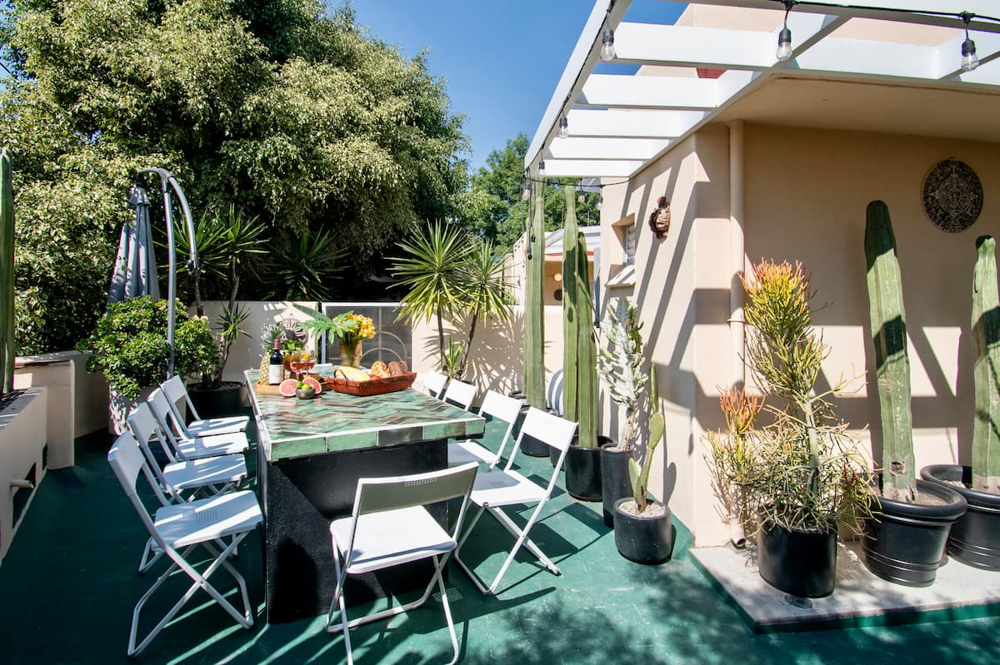
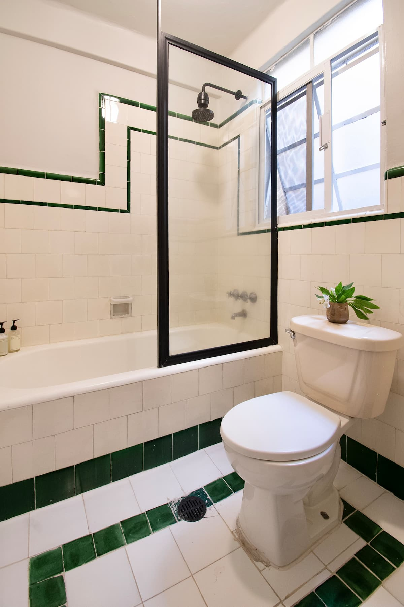
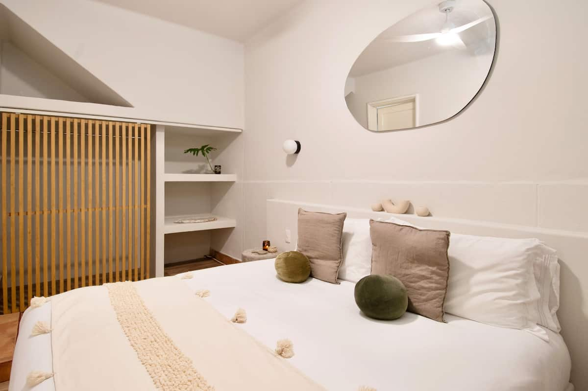
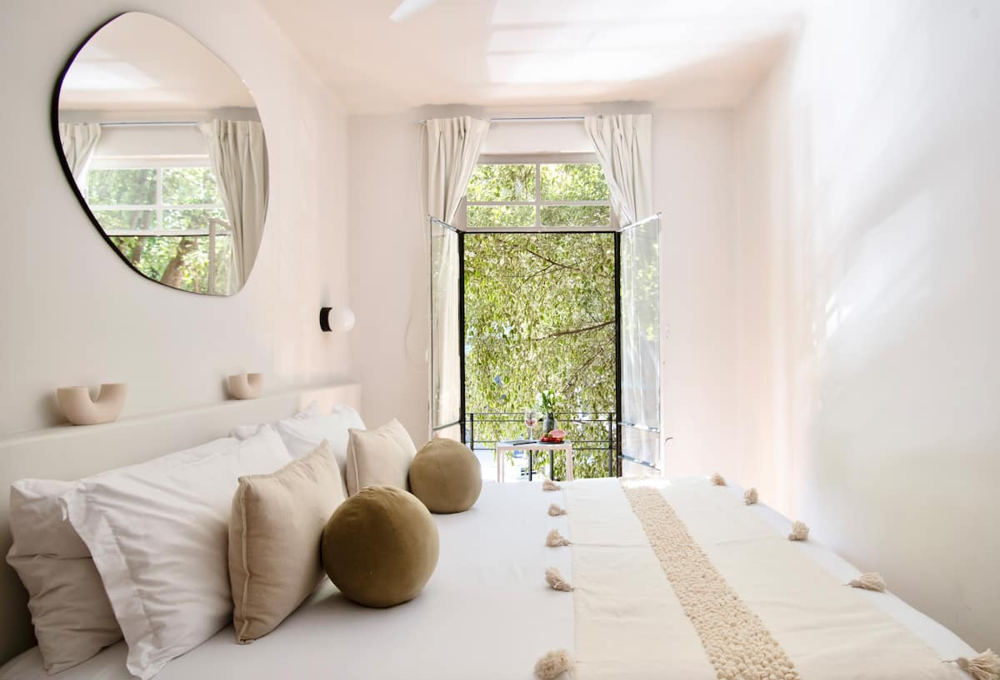
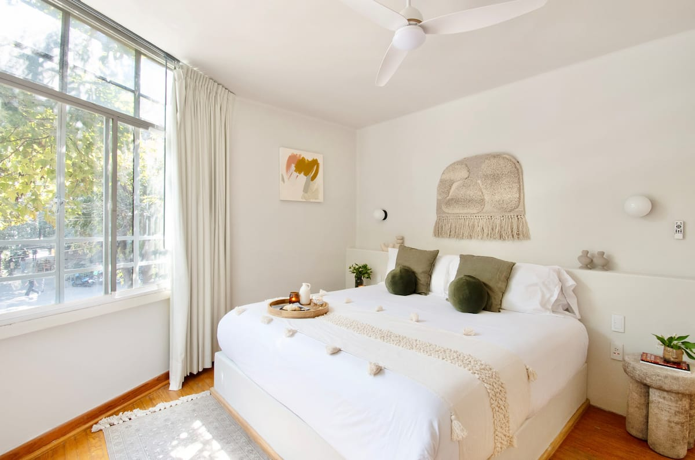
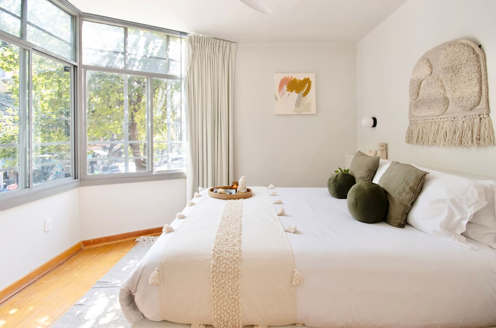
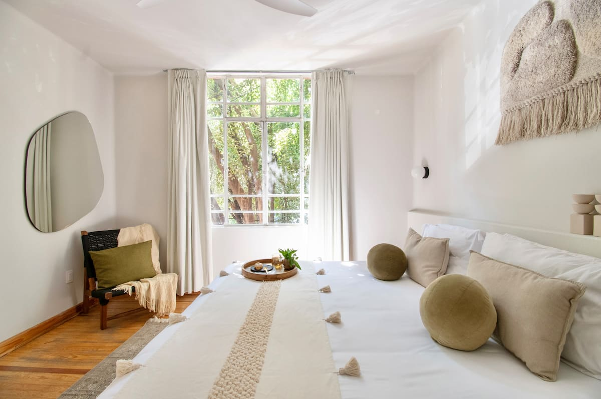
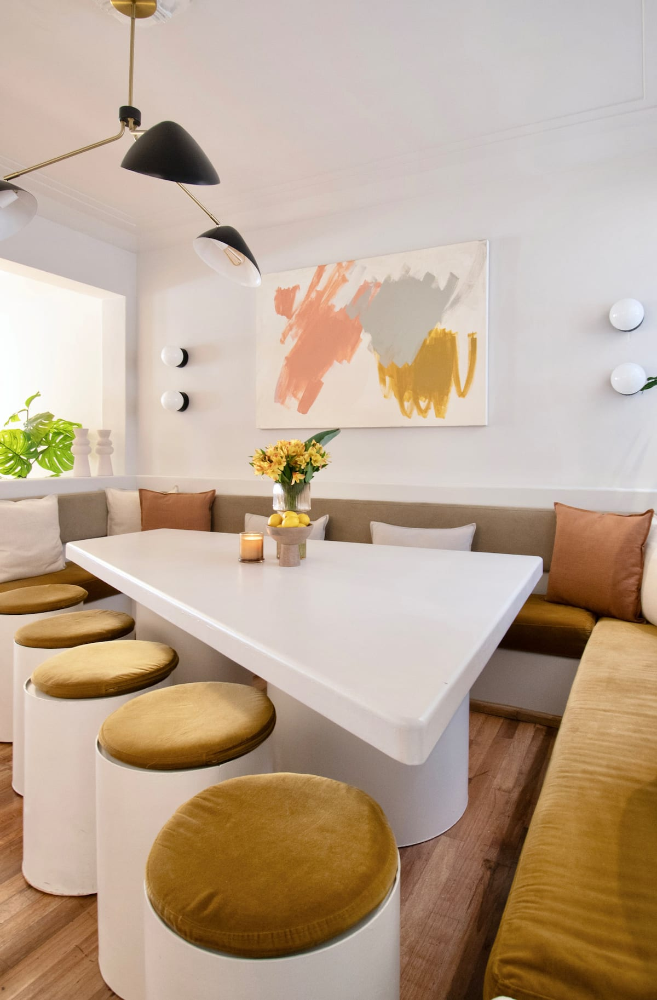
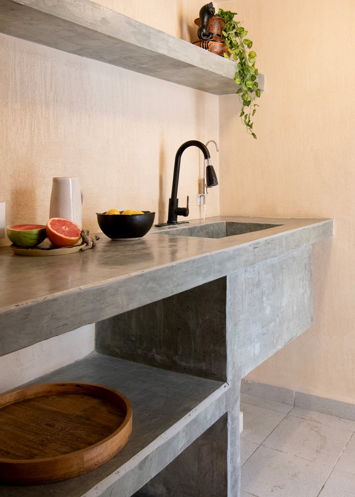
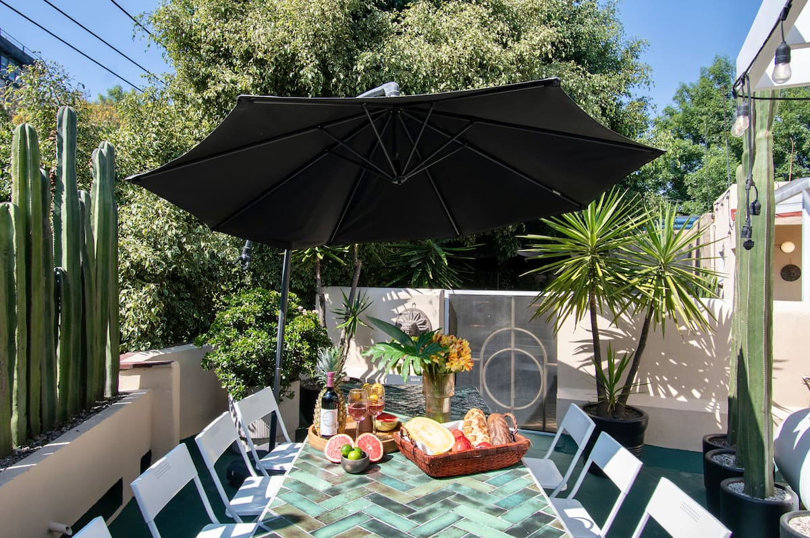
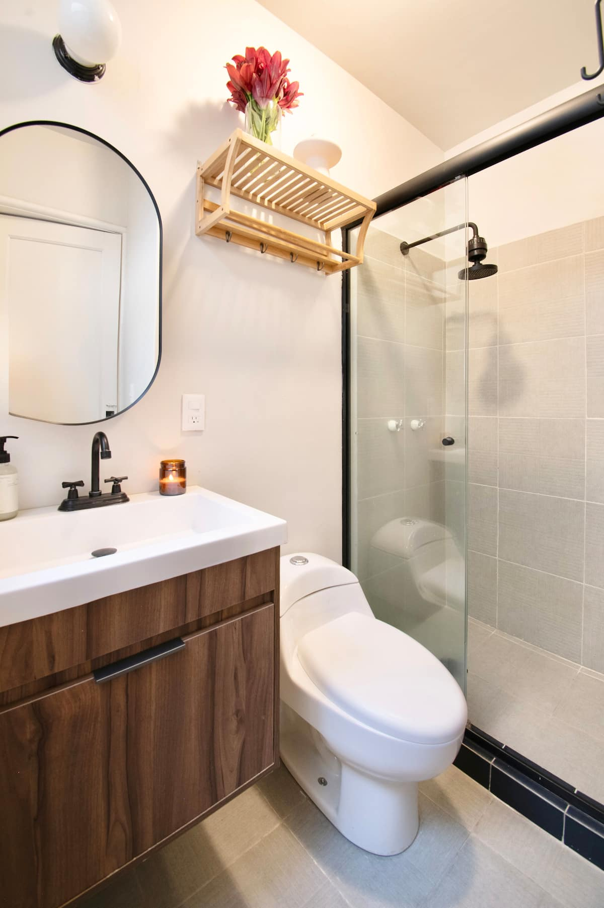
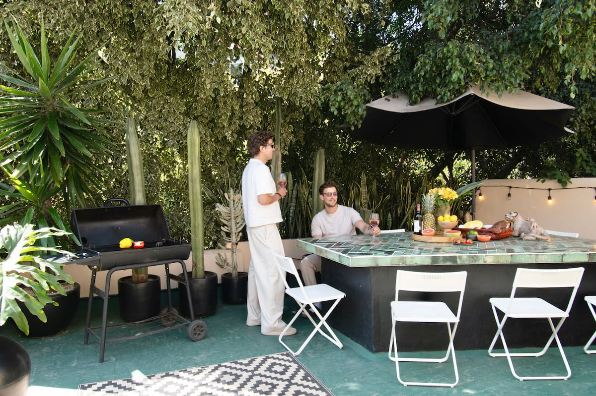
Tap any photo to view full size. See all 74 photos on Airbnb →
Weight class = shirt size. Tap a card to see your nickname & playing card.
Four nights. Tentative — subject to audibles.
Red-eye lands at Benito Juárez. Customs, baggage, and a convoy of Ubers down Insurgentes to the Condesa command center. Total damage: ~$15 USD per car, 25-minute ride if traffic's asleep.
Chilaquiles verdes, huevos a la mexicana, fresh papaya, and a wall of coffee — pre-booked and delivered straight to HQ, no one has to leave the house. CDMX sits at 7,350 ft, so hydrate hard before anyone touches a beer.
Day 1 is the recovery window — six hours to settle in, beat the red-eye, and get oriented. Pace yourself; tonight's the headline. Starter menu:
Whatever you do, be sharp by 5 — the Hanky Panky reservation waits for no one.
Top-50 cocktail bar in the world, hidden behind an unmarked taquería door — knock, give the password, walk through a fake kitchen. Two tables booked: a group of 9 and a group of 8.
The main event of the trip — and it's a full package. Kicks off at 6:30 PM with tacos al pastor at El Caifán (carved off the trompo, micheladas to coat the stomach) before we roll into Arena México for the matches. Masked luchadores — técnicos (good guys) vs. rudos (heels) — flying off the top rope. Half theater, half brawl, all chant-along. Beer vendors roam, intermission is mandatory micheladas, and yes, you can buy a mask on the way in. Shirts on tonight — 17 lucha libres in matching coral-and-teal, the photo of the trip. WhatsApp reservation locked.
Tucked behind an unmarked door at Hotel Carlota — and conveniently directly underneath our hotel, so the elevator ride home is the shortest commute of the trip. Low light, low key, mezcal Negronis, and a soft landing for the post-Lucha debrief.
Stay local. The neighborhood is the move — coffee, a pastry, a taco, a lap of the park. Don't go heavy; there's a boat full of micheladas and quesadillas waiting at noon. Pick your own order:
Royal Mobility scoops us up at HQ. Trajineras are flat, brightly painted party-boats poled through 100+ miles of pre-Hispanic canals — a UNESCO site that's been operating since the Aztecs. Mariachis pull alongside, food boats sell quesadillas, micheladas flow. The most fun you can have sitting down.
Boats dock, Royal Mobility drives us back. Shower the canal off, refuel, change. ~3 hours to reset before dinner.
Italian inside an old-school colonial mansion in Centro Histórico — soaring ceilings, courtyard, candlelight, one of the prettiest dining rooms in the city. We're on a pre-fixe menu — appetizers, mains, and drinks all set, so no decisions at the table, just eat. Pre-dinner play: get dropped a few blocks early and walk past Bellas Artes — the dome is lit up gold and copper at night.
Hi-fi listening bar — vintage tube amps, vinyl-only sets, jazz and soul leaning. The room is the experience: low light, big sound, conversation-volume music done right. A grown-up nightcap after Taverna and the bridge between dinner and the dance floor.
Second free morning of the trip — sleep in, eat well, ease into a long day. Pace yourself: taco tour at 12:30, Limantour and Blanco Colima after dark. Some options:
Guided crawl through CDMX's taco hall of fame — al pastor off the trompo, suadero, cochinita pibil, longaniza, and at least one stop with a salsa that puts you in your feelings. A local guide handles the ordering; we just eat. Best lunch decision of the trip.
Top-10 cocktail bar in the world, two floors on the Roma corner of Álvaro Obregón. The Margarita Al Pastor (yes, with pineapple-chili-cilantro) is the order. Reservation came in via email — confirm 24 hrs ahead.
Modern Mexican inside a 1907 Roma mansion. Three floors of dramatic black-walled dining rooms, tropical courtyard, and a menu built for a group — short rib, octopus, mole. OpenTable booked.
Choose your weapon. Sunday Sunday for the dance floor, Supra Roma for the rooftop and DJs. Last big night — pace accordingly, Monday morning is a flight.
Bags packed and stacked by 10:45. Host takes the keys — and good news: luggage can stay at the property until 3 PM, so we can walk to lunch unencumbered and come back to grab bags before heading to the airport.
Elena Reygadas's all-day Condesa flagship — wood-fire flatbreads, market salads, and the best bread in CDMX. Four blocks from HQ, walking distance. Two tables booked.
Direct UberXL to Benito Juárez Terminal 2. Allow 90 minutes for traffic + customs + security. Delta 8008 boards at 5:40 PM, wheels up 6:10. Final group photo in Lardo before we scatter.
For free blocks, audibles, and "where should we go now?" moments.
CDMX is huge — 9 million people in the city, 22 million in the metro, sprawled across the basin of an extinct lake at 7,350 ft of altitude. The good news: 90% of our trip happens in three adjacent walkable neighborhoods.
Tree-lined Art Deco, two big parks (México + España), the Avenida Amsterdam loop. Quiet by day, alive at night. Cafés and bars on every corner. This is home base.
Hipper, denser, more bars + restaurants per block than anywhere in the city. Limantour, Blanco Colima, Lardo's neighbors all live here.
Cocktail-bar capital — Hanky Panky, Owl Bar (at Hotel Carlota), Handshake, Rayo. Smaller, more residential than Roma but punches up.
Largest urban park in the Americas. Castle on the hill, Anthropology Museum, lakes. Sunday morning's plan.
Upscale shopping, embassies, Pujol + Quintonil territory. Avenida Presidente Masaryk = the strip. Visit if you want to feel briefly fancy.
The colonial old town. Zócalo plaza, Templo Mayor Aztec ruins, Bellas Artes (the gold-and-copper-domed concert hall). Where Saturday's Taverna dinner is.
Frida Kahlo's blue house, cobblestone plazas, weekend artisan market. Half-day excursion if anyone splinters off.
The trajinera canals — UNESCO site, Saturday's group tour. Far south but worth the haul.
The rule: if you're lost, walk back toward Parque México or open Uber — both will get you home. Most rides inside the HQ Triangle are $3–6 USD.
Specialty roaster with a Condesa shop. Single-origin pourovers, the morning move.
Cult specialty café, tiny seating, locals queue out the door. Worth the walk.
Sleek roaster on Tabasco. Strong cortado, decent pastries, great for laptop-and-a-flat-white.
Minimalist Condesa neighborhood spot. Quick stop on the way to the park.
Quiet, plant-heavy patio. Best for a slow second coffee with chilaquiles.
If you make it down to Coyoacán for Frida Kahlo, this is the coffee stop.
#1 on World's 50 Best Bars 2024. Hidden door, theatrical drinks. Reserve weeks out.
You're already booked Sunday 6:30 PM. Top-10 in the world, classic agave program.
Friday 5 PM kickoff. Iconic speakeasy — password entry through the back of a "taqueria."
Darwin-themed, Condesa-local, no fuss. Closest world-class cocktail bar to HQ.
Agave-forward, mezcal nerds welcome. Tiny, dim, no menu — bartender reads the table.
Modern, design-forward, also on World's 50 Best. Good late-night audible.
Witchcraft-themed cocktails over a pizzeria. Gimmicky on paper, excellent in glass.
Friday nightcap on the itinerary. Tiny speakeasy hidden behind a hotel lobby.
Elena Reygadas's bakery on Colima. The rol de guayaba is the order — guava + cream cheese inside a flaky brioche spiral. Conchas, croissants, breads. Pastries-to-go, no reservation.
Classic Mexican breakfast spot directly across from Parque México — chilaquiles, huevos motuleños, café de olla. Walking distance from HQ. Walk-in friendly, even for groups.
Tiny Condesa bakery, sourdough loaves and laminated pastries that sell out by 11 AM. Grab a kouign-amann and a coffee, eat it standing up. Walk-up only.
Elena Reygadas's all-day café — bigger menu than Rosetta, full breakfast and lunch service, and the same legendary pastry case. Easier to land a table for a small group.
Pastry-and-brunch counter inside a small hotel. Sourdough toast, fresh juice, eggs done right. Mellow vibe, design-y, easy mid-morning stop.
Eduardo García's casual all-day spot — chilaquiles, huevos rotos, killer fried chicken sandwich. No reservations, walk in for lunch and you'll get seated within 20 min.
Enrique Olvera's casual concept (yes, the Pujol guy). Sandwiches, salads, fresh-baked bread. The place to drop into for a fast, cheap, very-good lunch.
Argentinian-style empanadas — beef, ham + cheese, spinach. $2 each, perfect Friday afternoon snack between Hanky Panky and Lucha Libre. Counter service.
Health-leaning brunch — grain bowls, avocado toast, fresh juice — for the morning after. Designy, light, recovers a hangover quietly.
Guisados in a Condesa neighborhood spot — pick 3 stews, they pile them onto fresh tortillas. Cheap, fast, walking distance from HQ. Lunch only.
One-taco-only taquería that earned Michelin's first star for street food. Drop-in (no res), cash, $5 a taco. Worth the 15-min Uber if you're chasing a story.
Cochinita pibil only. Hole-in-the-wall in Polanco, no seating, ~$3 tacos in $300-jeans territory. Eat standing on the sidewalk and walk it off.
Heart of the neighborhood. Sunday morning is dogs, runners, cumbia and elote.
Walk the oval — it was a horse-racing track in the 1920s. ~30 min loop.
Saturday's plan. Castle on the hill, Anthropology Museum, Modern Art Museum nearby.
Saturday dinner is here. Zócalo, Templo Mayor ruins, Palacio de Bellas Artes — walk the loop pre-dinner.
Sprawling market — produce, mole, ceviche counters, Cuban torta stand. Eat your way through.
Mirror-tiled hourglass building. Rodin collection. Free and walkable in 90 min.
Frida Kahlo's Casa Azul, cobblestone plazas, weekend artisans. Lunch at the market.
Saturdays only — Bazaar Sábado, art market in a colonial square. Pair with Coyoacán.
Upscale shopping + Pujol/Quintonil zone. Avenida Presidente Masaryk is the strip.
Pyramid of the Sun + Moon. Half-day trip. Skip if Xochimilco fills the slot.
Magical-Town pueblo in the mountains. Hike up to Tepozteco temple. Weekend food market.
Sunday's plan. Trajinera party-boats on the canals — bring snacks, mariachis pull alongside.
Tap any question to expand. If you've got one we missed, text Joth.
CDMX in late May is temperate — high-70s by day, low-50s after dark, with the occasional afternoon thunderstorm. Pack layers and don't overthink it.
HQ is in Colonia Condesa — a tree-lined Art Deco neighborhood centered on Parque México. It's one of the safest, most walkable parts of the city, packed with cafés, boutiques, and bars. Roma Norte (just east) is a 10-minute walk; Polanco is a 15-min Uber north; Centro Histórico is 20 minutes by car. Most of our itinerary is in this triangle.
HQ is two designed houses next door to each other in Condesa with a combined 11 bedrooms · 13 beds · 6.5 bathrooms across both buildings (★4.81 on Airbnb).
That averages out to ~1.5 people per bedroom — most rooms will be solo, a few will be doubled up. Bed mix includes doubles, queens, and twins. First-come-first-served on the prime rooms; if you're picky, land Friday morning and stake your claim early.
See photos in the Travel & HQ section above.
Cards work almost everywhere — restaurants, cocktail bars, Ubers, even most taquerías. Bring a credit card with no foreign-transaction fee (Chase Sapphire, Capital One Venture, Amex Platinum all qualify).
Have ~$100 USD worth of pesos on you for cash-only spots: street tacos, the Xochimilco trajinera tip, Lucha Libre snacks, and bathroom attendants. ATMs at the airport (look for BBVA or Santander — skip the ones flashing "Euronet") give the best exchange rate.
Tipping: 10–15% at restaurants (check the bill — sometimes servicio is included), 20 pesos for bartenders, round up Ubers.
No. Bottled or filtered only — even for brushing teeth if you're sensitive. The Airbnb will have a garrafón (5-gallon jug) for refills. Ice in restaurants and cocktail bars is fine; they all use purified water.
CDMX sits at 7,350 ft — higher than Denver. First 24 hours, take it easy: drink water, ease off the mezcal, sleep. Hangovers hit roughly 2x harder up here. A coca tea or some electrolytes the morning after will save your Saturday.
Easiest: get an eSIM from Airalo or Holafly before you leave — $5–15 for the trip. Activate when you land.
T-Mobile international roaming works fine and is included on most plans. AT&T and Verizon usually charge $10/day for an "international day pass."
WhatsApp is the local default for everything — restaurants, drivers, even reservations.
Time: CDMX is on Central Time year-round (UTC-6, no DST). Two hours ahead of California. Don't get caught reservation-late.
Power: Same as the US — Type A/B plugs, 110V. No adapter needed.
Language: Spanish primary, English widely spoken in Condesa/Roma/Polanco. A few phrases (buenas, gracias, la cuenta por favor) go a long way.
Uber is cheap, fast, and everywhere. Most rides $3–10 USD. UberXL fits 6 — perfect for splitting the group into 3 cars. Don't hail street taxis.
The Metro works but skip it during rush hour (7–9 AM, 6–8 PM) with a group. Walking is the move within Condesa/Roma — most of our spots are 10–20 minutes apart on foot.
Condesa, Roma, and Polanco are very safe — comparable to any major US city neighborhood. Standard precautions: don't flash valuables, use Uber instead of street cabs, stick together late at night, watch your phone in crowds. Don't wander into unfamiliar neighborhoods after dark.
Daytime is fully casual — shorts, tees, sneakers. Evenings tilt smart-casual:
Locked reservations:
Tentative / audible: Sunday Sunday club, Sunday morning architecture stop.
17 shirts. Sized to your tag in the roster. The drop is locked & loaded.
The design is under wraps until the big reveal.
Trust the process — it slaps.